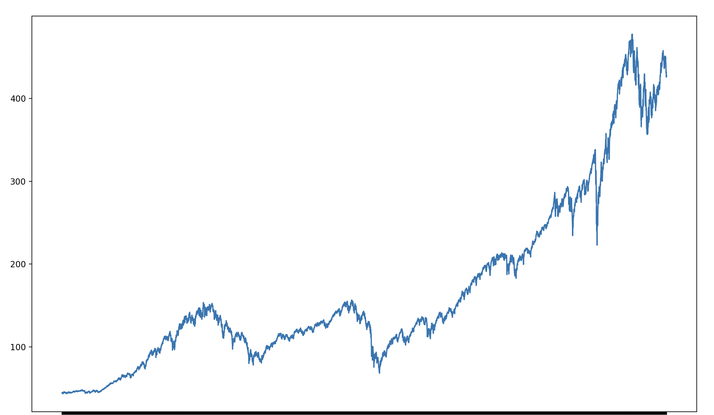
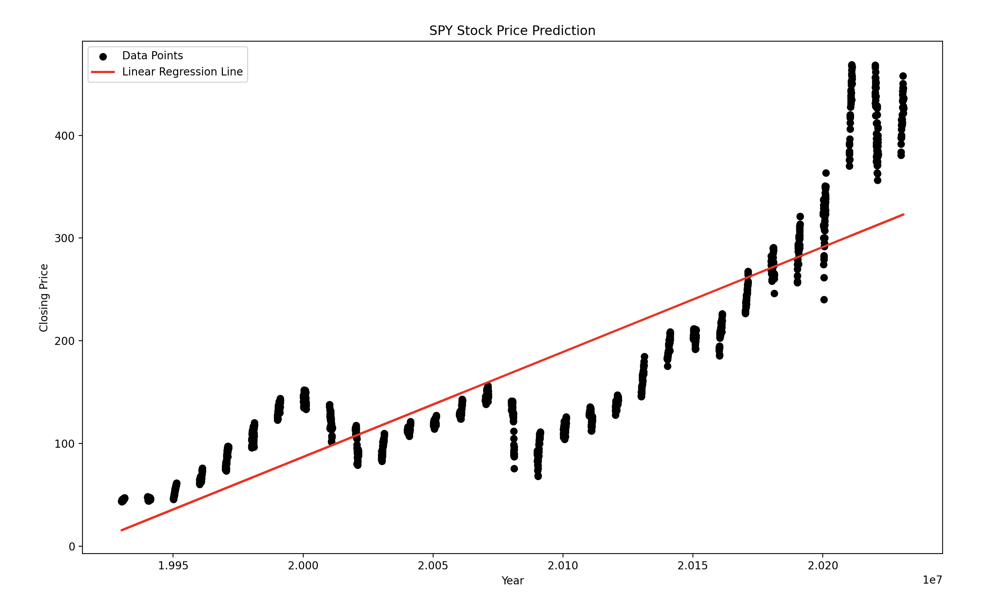
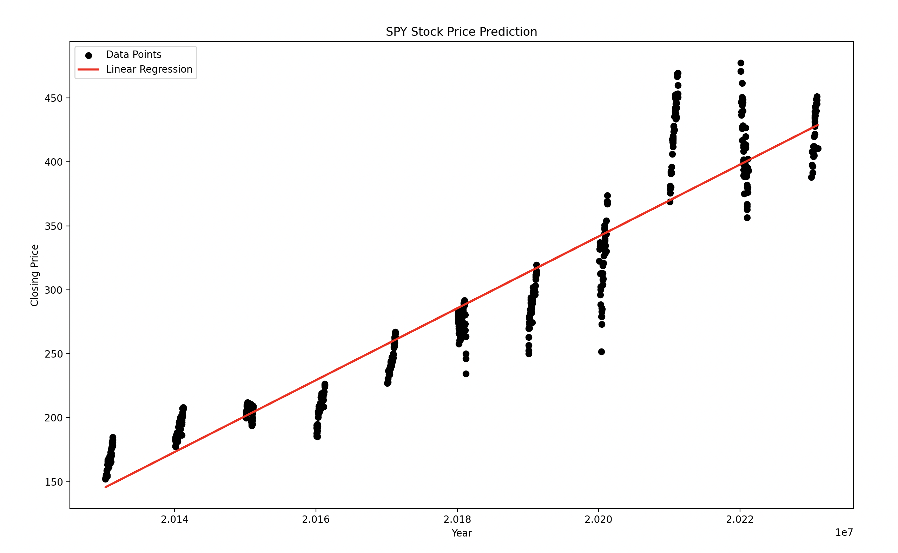
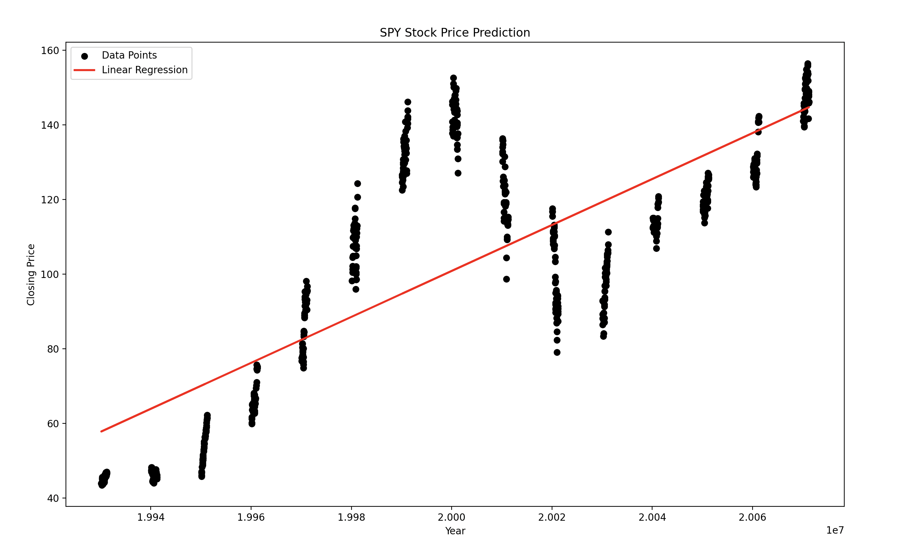

The Problem
I am doing my project on the historical prices of the S&P 500. Based on the historical data, I am interested to predict future stock prices. The future results are very uncertain, so I want to try to get insight on this by using regression. I am using the SPY historical data from Yahoo Finance. This includes variables such as open, close, high, low, and volume.
What is Regression?
Regression is a method used in data analysis to find a relationship between a dependent and independent variable. Two of the most common regression methods are linear regression and logistic regression. Linear regression is used when the dependent variable is continous, while logistc regression is used when the dependent variable is binary. Both methods are used to predict a future output.
Data Understanding
The dataset from Yahoo Finance has the closing price for every day since around the introduction of trading of the "SPY" stock. It follows the S&P 500, which contains a diverse range of most of the largest stocks in the U.S. All of the price variables such as open, close, low, and high are highly correlated with each other on the scale of the entire history of the stock. That means that to create price predictions based on the history, which indicator to use should not change the result too much. I will be using the closing price because that is what is generally used when using the result of a day.
Before I get started, there is an existing pattern through history with the SPY stock. It has an upwards trend through it's decades of history, which is why millions of U.S. investors trust it enough to invest large sums of money into it. Below I created a graph using the closing day of every day since its creation.
Pre-Processing
First, the dataset is located inside of a .csv file, so I read it using pandas into my code. To make sure there are no nulls in the dataset, I used the function "isnull().values.any()" which checks an entire dataframe for nulls, and either returns true our false. It returned true, so I was good to go. For my first experiment, I want to use the closing price as my dependent variable. When I visualized the SPY historical prices above, I checked for outliers that clearly weren't part of the SPY history. Fortunately, it was clear of those as well.
I won't need to change any of these features, because I'll have a categorical variable and a dependent variable for each experiment. This is the necessities for a linear regression model, so having these allow me to progress to the next step in the process.
When beginning my modeling, I realized that I could not use the date strings that were a part of the .csv file. It was tricky, but I learned you can actually encode the date as an integer. With this new trick, I could move on to modeling.
Modeling
Here is my model for linear regression based on the closing price of the SPY stock.
Evaluation
I used an r-squared value to evaluate the usefulness of my model. The r-squared value indicates how much of the price movement can be explained by the model, because the closer the scatter is to the line, the higher the r-squared value. I used this because I wanted to test how successful the model is at predictions.
In the stock market, the average investor is going to want a stock on the more predictable side. The r-squared value I got for my model used the "r2_score()" method was 0.747828. R-squared is on a scale from 0-1, so this means that 74.7828% of values were predictable by the model.
Experiment 2
For my second experiment, I decided to change the timeframe to only since 2013 and keep the rest of the model the same. I was interested in two main things; the location of the linear regression line and the difference in r-squared from the first experiment. To do this, I made the date have to be greater than 2013-01-01. Here is the result I got below.
This linear regression line is much steeper due to the fast growth of the 2010s and 2021. The all-time model has the end of the linear regression line a decent amount below the current price, while this one since 2013 is right around the price.
The r-squared value of this linear regression line is 0.899986. This is significantly higher than the first experiment. That means that the data fits the line better, which can also be seen visually if you compare the two graphs.
Experiment 3
For my third experiment, I decided to change the date to January 1993 to December 2007. Once again, I did not change the rest of the model at all.
Due to the dot-com bubble, there was a sharp price increase heading into the 2000s. When the dot-com bubble burst, the stock market crashed through 2003. Due to this volatility, the r-squared value is at 0.664329. This is much lower than the other two experiments.
It may seem like a weird date range to use, but the reason I chose it was to create a linear regression line before the housing crash in 2008. At the end of 2007, the SPY stock was sitting around $150. In 2009, at the lowest point of the housing crash, the SPY stock dropped to a low of $67.10. Without current events, these drops would not make sense to a viewer. That is why in the present we cannot go strictly off the numbers to predict future results.
Impact
These results can have a positive or negative result on someone based on how they are consumed. The main positive result to get out of these experiments is that we cannot predict the short term, but long term there is not many indexes that grow as consistently as the S&P 500. The linear regression model proves it has trended upwards through it's history and pushes through U.S. downturns.
A negative impact of my experiments would be if someone believed that these numbers indicated short term growth or decline. I proved this with my third experiment, no matter how consistent the growth looks like, there is always a chance of a large upturn or downturn when you least expect it.
Conclusion
I learned a lot through these experiments. Trying to predict a value that other people are trying to predict with billions of dollars is never a simple task. Changing the dates to affect the resulting linear regression line was very insightful. While it looks like the data will continue to follow the line, it often will not.
Pre-processing this data was tricky at times due to the dates not being able to be strings. I had to improvise and find a solution that would work with sklearn, which overall made me a more knowledgable programmer than before.